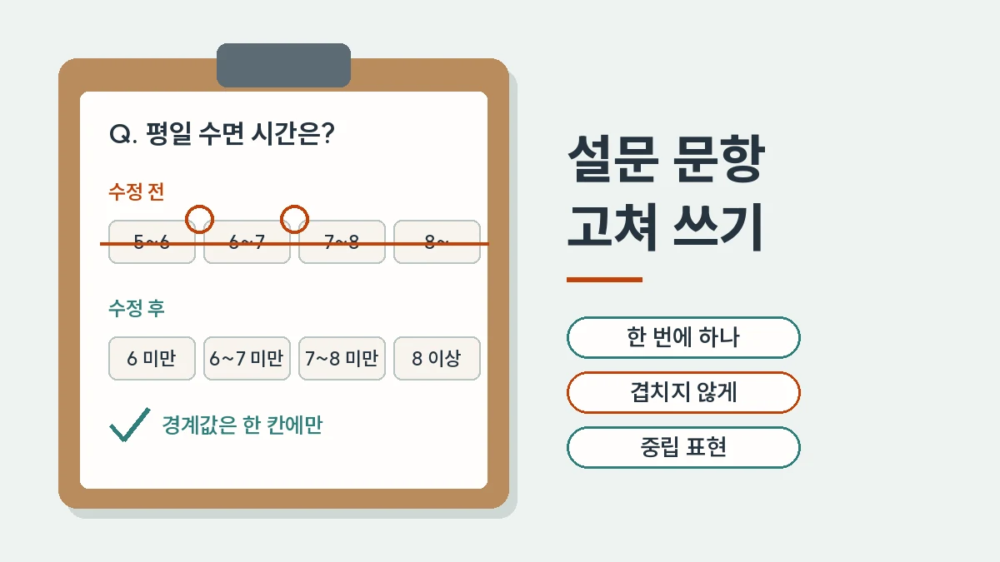

설문 문항은 어떻게 써야 할까? 두 가지를 묻는 질문과 겹치는 선택지 고치기
탐구 설문을 배포하기 전에 문항과 선택지를 점검하는 법을 다룹니다. 이중 질문, 답을 암시하는 표현, 겹치거나 빠진 선택지, 동의형 문항, 좋게 보이려는 응답을 고치는 방법과 가상 수면 시간 자료로 본 선택지 경계의 영향, 수정 전후 문장, 배포 전 점검표를 안내합니다.

탐구보고서에서 가장 흔한 자료 수집 방법은 반 친구들에게 돌리는 설문입니다. 온라인 설문 도구로 10분이면 만들 수 있지만, 결과를 정리하다 보면 이런 문제가 뒤늦게 보입니다. 한 문항에 두 가지를 물어서 ‘그렇다’가 무엇에 대한 답인지 모르거나, 선택지 경계가 겹쳐서 같은 학생이 두 칸 중 아무 데나 고를 수 있었던 경우입니다. 이런 문항으로 모은 응답은 나중에 해석을 아무리 잘 써도 고칠 수 없습니다.
이번 칼럼은 설문을 배포하기 전에 문항과 선택지를 점검하고 고쳐 쓰는 방법을 다룹니다. 질문 속 낱말을 무엇으로 셀지 정하는 일은 측정 기준 칼럼에서, 실제로 한 절차를 방법 문단에 적는 일은 방법 문단 칼럼에서 다뤘습니다. 이 글은 그 사이에서, 정한 기준을 응답자가 읽을 문장으로 옮기는 단계를 맡습니다. 과제 안내에 설문 양식이나 대상이 정해져 있다면 그 조건을 먼저 따르세요.
문항의 낱말 하나가 응답을 바꿉니다
미국 퓨 리서치 센터(Pew Research Center)는 설문 문항 작성법을 설명하면서, 작은 표현 차이도 응답을 크게 바꿀 수 있다고 적습니다.[1] 같은 군사 행동에 대한 찬반을 물으면서 문항 끝에 ‘수천 명의 사상자가 날 수 있더라도’라는 조건을 붙이자, 찬성이 68%에서 43%로 낮아졌다고 소개합니다.[1] 센터는 표현이 결과에 미치는 영향을 확인할 때 표본을 무작위로 둘로 나눠 서로 다른 문항을 보여 주는 방식을 쓴다고도 설명합니다.[1]
학생 설문에서 이런 실험까지 할 필요는 없습니다. 다만 ‘내 문항의 표현이 응답자를 한쪽으로 미는가’는 배포 전에 반드시 읽어 봐야 합니다. 아래 다섯 가지는 고교 탐구 설문에서 자주 보이는 문제입니다.
배포 전에 고칠 다섯 가지
- 한 문항에 두 가지를 묻는다: “급식의 맛과 양에 만족하나요?”에 ‘보통이다’라고 답한 학생이 맛에 대해 답했는지 양에 대해 답했는지 알 수 없습니다. 퓨 리서치 센터는 이런 문항을 이중 질문(double-barreled question)이라 부르고, 응답하기도 해석하기도 어려우니 두 문항으로 나누라고 권합니다.[1] 문항에 ‘와’, ‘과’, ‘및’, ‘그리고’가 있으면 먼저 의심해 보세요.
- 답을 미리 알려 주는 표현: “잠들기 전 스마트폰 사용이 수면을 방해한다는 연구가 많은데, 사용을 줄여야 한다고 생각하나요?”는 질문 앞부분이 이미 정답을 정해 둡니다. 배경 설명은 빼고 “잠들기 전 30분 동안 스마트폰을 사용한 날은 지난 7일 중 며칠인가요?”처럼 행동을 묻는 문항으로 바꾸는 편이 낫습니다. 감정이 실린 낱말도 같은 문제를 만듭니다. 센터는 같은 정책이라도 쓰는 낱말에 따라 지지율이 달라진 사례를 소개합니다.[1]
- 선택지가 겹치거나 빠진다: 선다형 선택지는 생길 수 있는 응답을 모두 포함하고, 서로 겹치지 않아야 합니다.[1] 이 문제가 실제로 얼마나 큰지는 바로 아래 가상 예시로 보겠습니다.
- ‘동의하나요?’만 묻는다: 센터는 진술문에 동의 여부를 묻는 형식에서 일부 응답자가 내용과 관계없이 동의하는 경향(묵종 편향)이 생긴다고 설명하고, 서로 다른 두 진술 가운데 하나를 고르게 하는 방식을 더 나은 방법으로 제시합니다.[1] “나는 시험 기간에 계획을 세워 공부한다”에 동의하는지 묻기보다 “시험 기간에 나는 (가) 미리 세운 계획대로 공부하는 편이다 / (나) 그날 필요한 과목을 정해 공부하는 편이다” 중 고르게 하는 식입니다.
- 좋게 보이고 싶은 마음을 건드린다: 사람들은 민감한 주제에서 남에게 좋게 보이는 쪽으로 답하는 경향이 있고, 면접자가 있을 때 이 경향이 더 커질 수 있습니다.[1] 하루 공부 시간이나 규칙 위반처럼 평가가 따라붙는 질문은 익명으로 받고, 친구가 옆에서 지켜보는 상황에서 응답하게 하지 마세요. 그래도 남는 치우침은 한계로 적습니다.
겹치는 선택지가 결과를 얼마나 흔드는가
아래 자료와 문장은 편집팀이 만든 교육용 가상 예시입니다. 실제 학교나 학급의 조사 결과가 아닙니다. 한 반 25명의 평일 평균 수면 시간이 30분 단위로 다음과 같다고 가정합니다.
- 수면 시간(시간): 4.5, 5, 5.5, 6, 6, 6, 6.5, 6.5, 7, 7, 7, 7, 7.5, 7.5, 6, 5.5, 8, 8, 6.5, 7, 5, 6, 7, 8.5, 6.5
- 평균 6.52시간입니다. 정확히 6시간인 학생이 5명, 7시간이 6명, 8시간이 2명으로, 25명 중 13명이 정각 값에 있습니다.
이 반에 “5~6시간 / 6~7시간 / 7~8시간 / 8시간 이상”이라는 선택지를 주면 두 가지 문제가 생깁니다. 4.5시간을 자는 학생 1명은 고를 칸이 없습니다. 정확히 6·7·8시간인 학생 13명은 두 칸 중 어느 쪽을 골라도 틀린 답이 아닙니다. 그래서 ‘6~7시간’에 표시된 인원은 응답자가 경계값을 어느 쪽으로 넣었는지에 따라 적게는 4명(16%), 많게는 15명(60%)까지 될 수 있습니다. 같은 학생, 같은 수면 시간인데 결과표의 숫자가 네 배 가까이 달라질 수 있는 셈입니다.
경계를 “6시간 미만 / 6시간 이상 7시간 미만 / 7시간 이상 8시간 미만 / 8시간 이상”으로 고치면 모든 학생이 정확히 한 칸에 들어갑니다. 같은 가상 자료로는 5명(20%), 9명(36%), 8명(32%), 3명(12%)이고, 합하면 25명입니다. 구간을 처음부터 정하기 어렵다면 “평일에 평균 몇 시간 자나요? (30분 단위로 적기)”처럼 숫자를 직접 받고, 구간은 분석할 때 나누는 방법도 있습니다. 이 경우에는 응답 단위를 문항에 꼭 적어야 합니다.
수정 전 · 가상 초안
설문 결과 6~7시간 자는 학생이 가장 많았다. 따라서 우리 반 학생 대부분은 수면이 부족하다.
이 초안은 겹치는 선택지로 얻은 숫자를 그대로 믿었고, ‘가장 많았다’에서 ‘대부분 수면이 부족하다’로 건너뛰었습니다. 몇 시간부터 부족한지도 정하지 않았습니다.
수정 후 · 가상 자료로 쓴 문장
평일 평균 수면 시간을 30분 단위로 직접 적게 한 뒤 겹치지 않는 네 구간으로 나눴다. 응답자 25명 가운데 6시간 이상 7시간 미만이 9명(36%)으로 가장 많았고, 7시간 미만은 모두 14명(56%)이었다. 다만 수면 시간은 학생이 기억에 의존해 스스로 적은 값이므로 실제와 다를 수 있으며, 한 학급의 응답이어서 학교 전체로 일반화하지 않는다.
수정한 문장은 문항을 어떻게 받았는지, 구간을 어떻게 나눴는지, 자기 보고 자료라는 한계를 함께 적었습니다. ‘부족하다’는 판단이 필요하다면 그 기준을 어디서 가져왔는지 따로 밝혀야 합니다.
문항 순서와 사전 점검
앞 문항이 뒤 문항의 답에 영향을 주기도 합니다. 퓨 리서치 센터는 앞에 나온 문항이 뒤 문항의 맥락이 되는 현상을 순서 효과라고 부르고, 설문지는 주제별로 묶어 자연스러운 순서로 배치하라고 권합니다.[1] 학생 설문이라면 “스마트폰 때문에 성적이 떨어졌다고 느끼나요?” 같은 문항을 하루 공부 시간 문항 바로 앞에 두지 않는 정도부터 챙기면 됩니다. 학년·반처럼 꼭 필요하지 않은 개인 정보는 묻지 말고, 필요하다면 끝으로 보냅니다.
센터는 새 문항을 처음 쓸 때 사전 점검(pretest)이 질문지 설계의 필수 단계라고 설명합니다.[1] 본 설문 전에 친구 세 명 정도에게 문항을 풀게 하고, 문항마다 “이 질문이 무엇을 묻는 것 같았어?”, “고르기 어려운 칸이 있었어?”라고 물어보세요. 대답이 내 의도와 다르면 문항을 고칩니다. 사전 점검 응답은 본 결과에 섞지 않고, 무엇을 고쳤는지만 방법 문단에 남깁니다.
오늘 남길 산출물: 설문 문항 점검표
배포 버튼을 누르기 전에 문항마다 아래 질문에 ‘예’ 또는 ‘아니오’로 답해 보세요. 하나라도 걸리면 그 문항부터 고칩니다.
- 이 문항은 측정 기준 칼럼에서 정한 기준 하나에만 대응하는가?
- 문항 안에 ‘와·과·및·그리고’로 묶인 두 대상이 있지는 않은가?
- 답을 암시하는 배경 설명이나 감정이 실린 낱말이 들어 있지 않은가?
- 선택지가 가능한 응답을 모두 덮고, 경계값이 정확히 한 칸에만 들어가는가?
- 기간(지난 7일, 평일 등)과 단위(시간, 회, 권)가 문항에 적혀 있는가?
- 동의·비동의만 묻고 있다면 두 진술 중 하나를 고르는 형식으로 바꿀 수 있는가?
- 좋게 보이고 싶은 마음이 작용할 질문은 익명으로 받는가?
- 친구 세 명에게 미리 풀게 해 보고, 고친 내용을 기록했는가?
설문 참여는 강요하지 말고, 응답이 어디에 쓰이는지 미리 알리세요. 학교에 설문 관련 규정이나 담당 교사의 확인 절차가 있다면 그 절차를 따릅니다. 이 점검표는 학생이 자기 탐구를 설계하기 위한 도구이며, 교사의 세특 문장을 대신 쓰거나 평가 결과를 보장하는 용도가 아닙니다. 아직 배포하지 않은 설문은 보고서에 ‘실시할 예정’으로, 실제로 받은 응답은 날짜와 응답자 수와 함께 구분해 적으세요.
함께 읽을 글과 참고자료
보고서 전체 구성은 탐구보고서 대표 작성 가이드에서 확인하세요. 모은 응답을 표나 그래프로 옮긴 뒤 본문을 쓰는 방법은 표·그래프 본문 칼럼을, 자기 보고 자료와 한 학급 표본의 한계를 쓰는 방법은 한계 분석 칼럼을 함께 보면 됩니다. 이번 칼럼은 설문을 배포하기 전에 문항과 선택지를 고치는 일에 역할을 한정합니다.
2026년 11월 17일 아래 원문을 직접 확인했습니다. 미국 여론조사 기관이 공개한 문항 작성 원칙을 참고했으며, 한국 고교 보고서의 공통 양식이나 채점 기준으로 제시한 것은 아닙니다. 원문에 소개된 수치는 미국 성인 대상 조사 결과이고, 수면 시간 자료와 급식·스마트폰·공부 습관 문항, 수정 전후 문장과 점검표는 편집팀이 독립적으로 만든 교육용 예시로 실제 조사를 수행한 결과가 아닙니다.
- [1] Pew Research Center — Writing Survey Questions: 표현 차이에 따른 응답 변화와 그 사례, 문항을 두 형태로 나눠 비교하는 방식, 선택지의 포괄성과 상호 배타성, 이중 질문, 동의·비동의 형식과 묵종 편향, 사회적 바람직성 편향, 순서 효과, 사전 점검의 필요성을 확인했습니다. 원문을 번역·재배포하지 않았습니다.
이 칼럼은 운영자의 관점과 일반 교육 정보를 담고 있으며 특정 대학 합격이나 평가 결과를 보장하지 않습니다.
함께 볼 글

탐구보고서 쓰는 법: 형식 6요소와 서론·본론·결론 실제 예시NEW
탐구보고서의 기본 구조 6요소와 작성 순서, 한 가지 가상 예시로 완성하는 서론·본론·결론 문장, 하루 30분씩 5일 작성 계획과 수정 기록 방법을 정리한 대표 작성 가이드입니다.

탐구보고서 자기점검 루브릭: 질문·방법·근거·한계로 고쳐 쓰기NEW
대학의 공식 평가표가 아닌 사이트 자체 자기점검 기준으로, 보고서의 빈칸을 찾고 수정 우선순위를 정합니다.